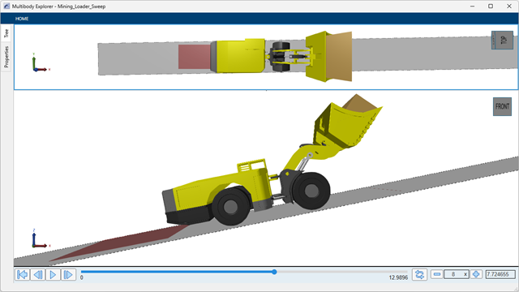
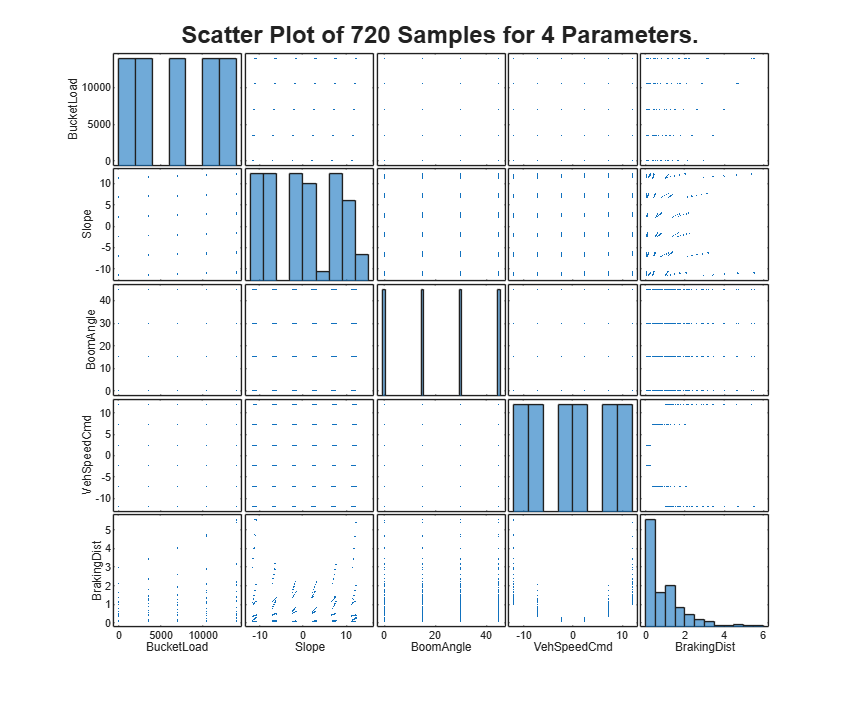
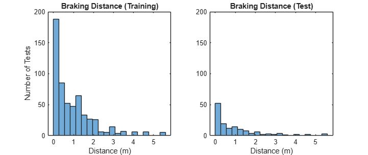
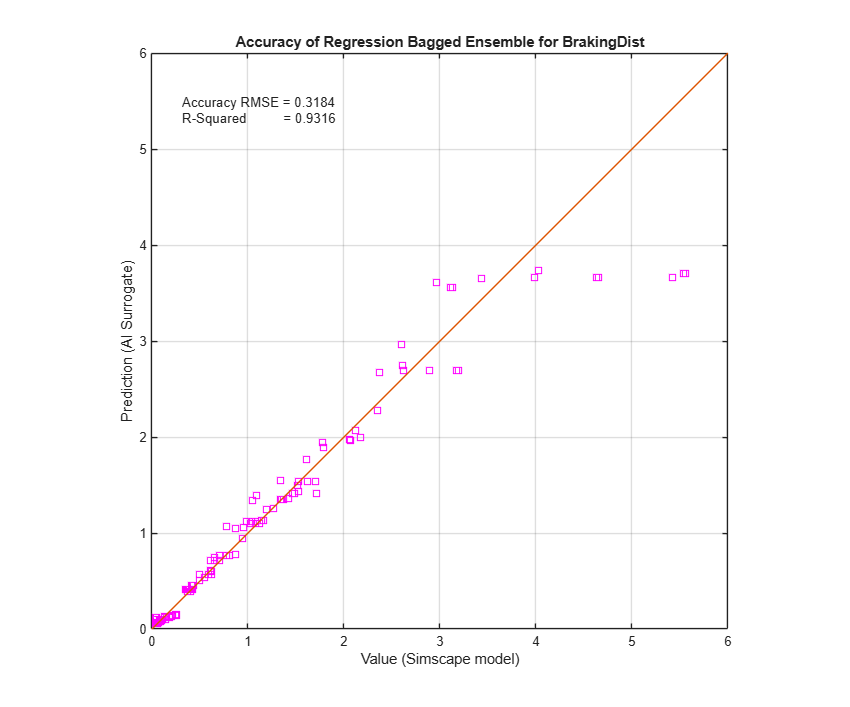
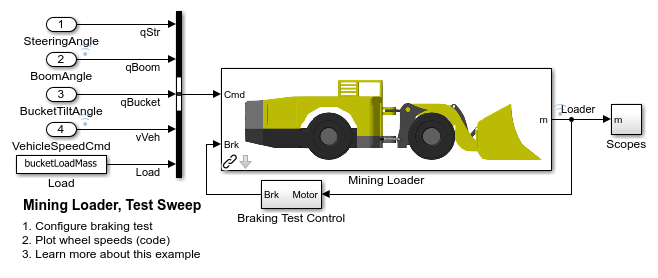
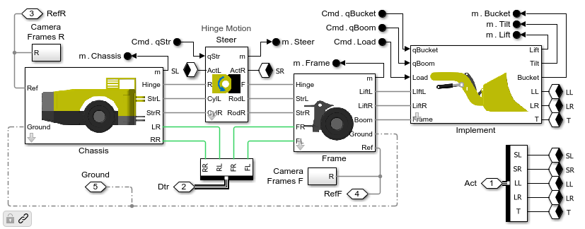
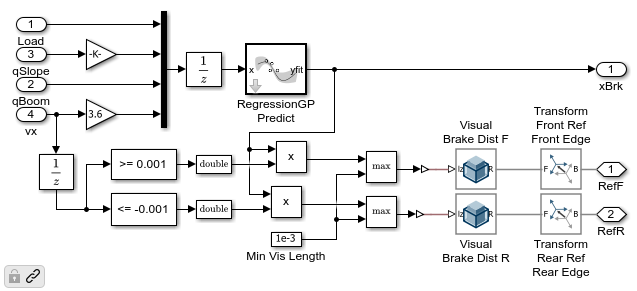
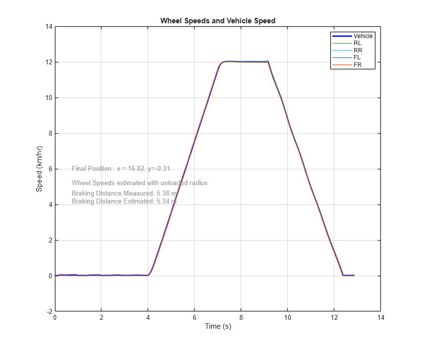
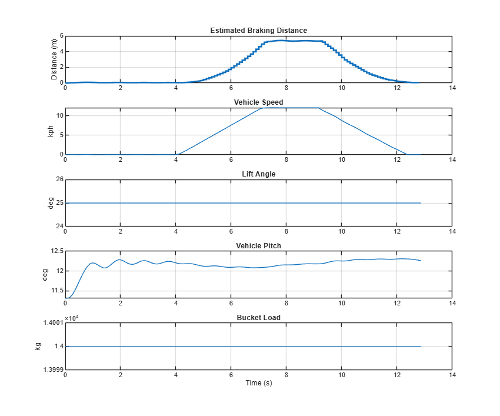

Train and Validate Surrogate Model for Braking Sensor

Contents
Overview
This example trains an AI surrogate model from data generated by a mining loader model created in Simscape. Machine Learning is used for both the models and model training. The basic steps are:
- Prepare the data collected from a DoE for training and validation
- Select the models that will be trained
- Train the models using a portion of the DoE data
- Evaluate the accuracy of all trained models using validation data
- Select the model for use in other steps of the design workflow
The code used to create this documentation is here: vrt_brk_train_surrogate.m
(return to Mining Loader Design with Simscape Overview)
Load and Analyze the Training Data
Load results of DoE that generated training data. The scatter plots show the distribution of parameter values and resulting braking distance, which gives a slight indication of the influence of the parameters on performance metric.

Train Machine Learning Models
Use training data to train Machine Learning models. Both multi-output and single output models are trained. After the models are trained, we assess the accuracy of each model using the test data. We compare the performance metric predicted by the trained model against the true value from the original Simscape simulation. The most accurate models will be used for the following steps of the workflow.
From the plots below, it is clear that the Gaussian Process Regression model is more accurate than the Regression Bagged Ensemble model. That is the model that will be used for the virtual sensor


Mining Loader Model
The virtual braking distance sensor performance must be validated by connecting it to the model of the mining loader. The sensor will be tested in the same model we used to generate the training data.

Vehicle Model
The vehicle model contains the articulated chassis with a hinge connecting the chassis to the frame. The implement attaches to the frame Two wheels on the rear frame and two wheels on the front frame are connected via driveshafts to the drivetrain Contact forces enable the tires to ride over the selected surface.
The virtual braking distance sensor can be enabled or disabled, depending on the stage of model development. It takes sensor inputs and estimates the braking distance.

Test Surrogate Model
The surrogate model is used to estimate braking distance. The current bucket load, vehicle pitch, boom angle, and vehicle speed are provided as inputs, and the trained Regression Gaussian Process model estimates the braking distance. Variable Brick Solid blocks visualize the braking distance in the animation.

A braking test is performed and the braking distance estimated by the sensor is compared to the final braking distance measured during simulation. Though the match is close, it is not exact. The vehicle pitch data is sampled as it would be on an actual sensor, and this slightly alters the input to the virtual braking sensor.

